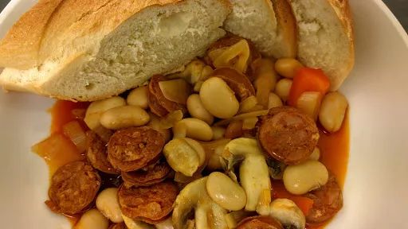

Chorizo and butter bean stew
25 mins
Serves 2

Ingredients
- 1 small onion, sliced
- ½ red pepper, sliced
- 400 g tin butter beans, rinsed and drained.
- 4 mushrooms, sliced
- 2 medium sized chorizo sausages, cut into thin slices
- 1 tbsp balsamic vinegar
- ½ mug water
- 1 tbsp concentrated liquid chicken stock
- 1 tsp sugar
- crusty bread, to serve
Instructions
- Heat a little oil in a wok and fry the
chorizo2 medium
for 2-3 minutes. Remove from the pan and set to one side. Tip out most of the fat leaving approximately 1 tbsp in the pan.
- Add the
peppers½
and onions and fry until they begin to soften.
- Add the
mushrooms4
, stock1 tbsp
, water½ mug
, balsamic vinegar1 tbsp
and sugar1 tsp
. Return the chorizo2 medium
to the pan and bring to the boil. Turn down and simmer for 4-5 minutes.
- Add the beans to the pan and boil for 1 minute.
- Serve with crusty bread.
Nosh for graduates
Short Link
Long Link